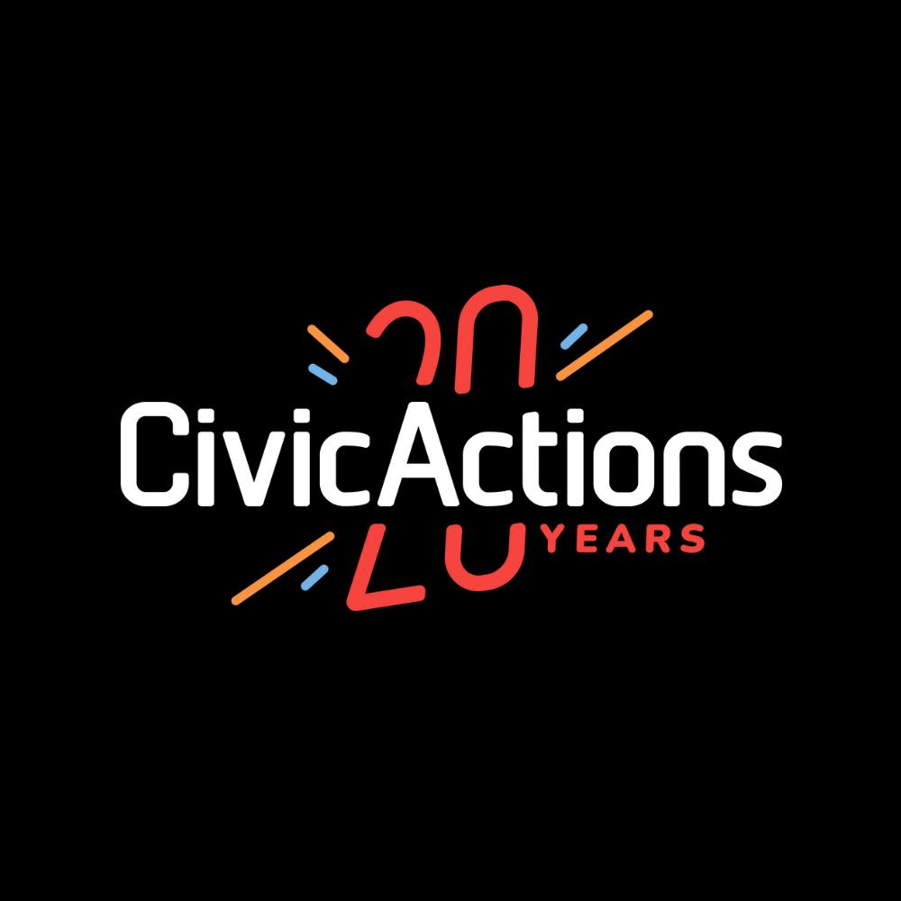
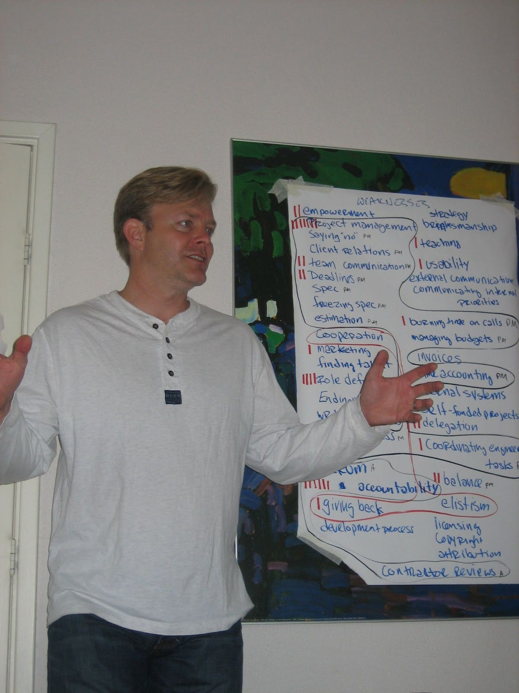
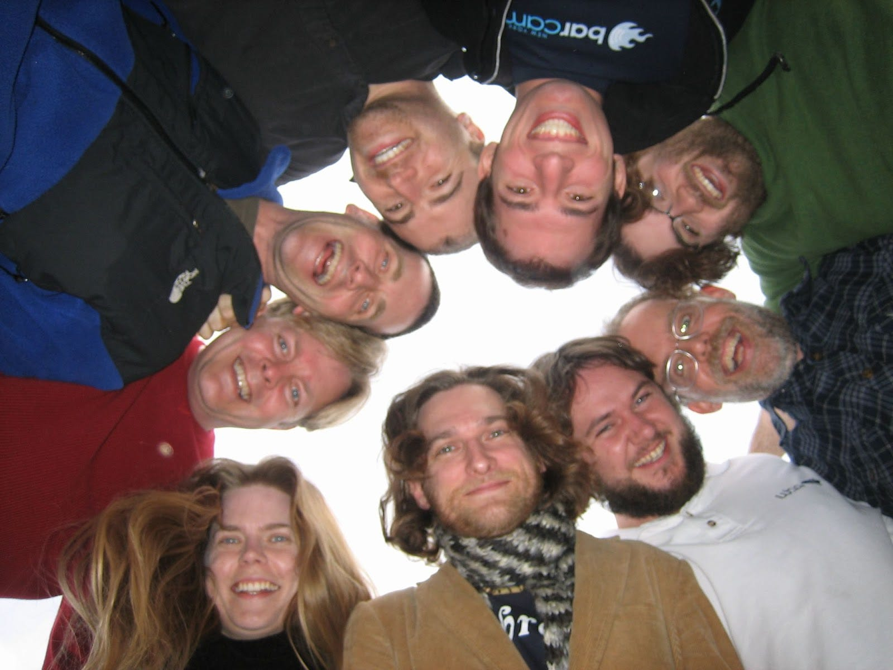
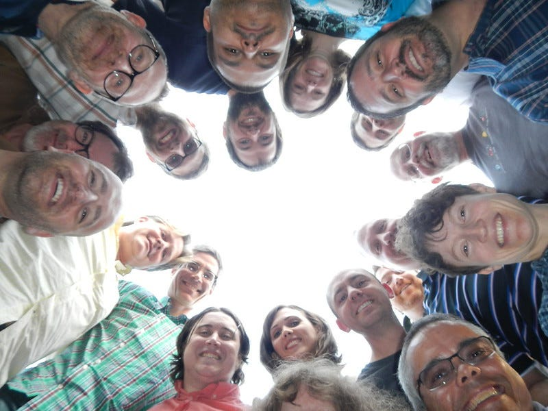
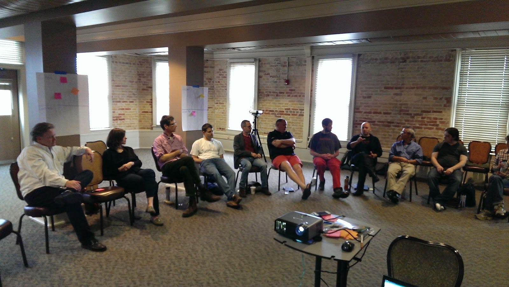
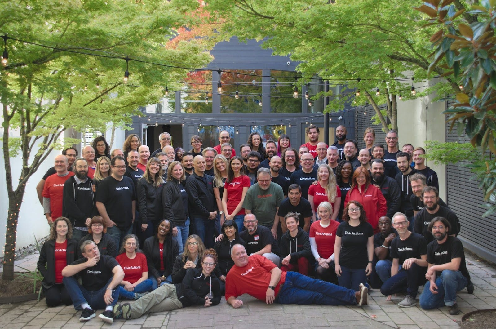

CivicActions’ 20th Anniversary: Reflecting on Two Decades of Innovation and Impact

Social Impact
In 2004, CivicActions was founded with a bold mission to harness the power of emerging technologies for social good. Founders Henry Poole and Aaron Pava recognized the immense potential of free and open-source software (FOSS) to drive positive change. They set out to provide high-quality open source solutions and group-forming network technologies to empower NGOs and nonprofits.
Over the course of the first eight years, CivicActions proudly served nearly 200 social impact organizations. The client roster included renowned organizations such as Amnesty International, ACLU, Greenpeace, Center for Reproductive Rights, American Public Media, Free Software Foundation, Creative Commons and Common Sense Media. CivicActions’ expertise extended to major human rights, media, and advocacy organizations, all of whom sought to leverage open technology solutions to amplify their impact.
Innovating in Open Source
CivicActions has long been recognized as pioneers in the realm of free and open source and agile development. By providing custom software development and support services, the company empowered clients to harness the transformative potential of open software, including being early adopters of Drupal, Openwall Linux, and CiviCRM.
In 2005, members of our team joined one of the first Drupal community gatherings in Amsterdam, and later helped organize the first DrupalCamp events based on the Bar Camp format.
The company has played a vital role in the growth and success of the Drupal community through its early adoption, core contributions, modules, and community engagement. This has included sponsoring numerous DrupalCons, DrupalCamps, and other community events. We currently support nearly 70 modules for Drupal including as maintainers of the U.S. Web Design System (USWDS).
Remote Work Pioneers
CivicActions’ long history with remote work, dating back to its founding in July 2004, makes it one of the earliest and most experienced adopters of distributed work, not just in the technology industry, but across all sectors.
Being a fully remote company has allowed CivicActions to attract top talent from diverse locations and provide flexibility for its employees. The deep experience has enabled us to develop best practices and share knowledge with government agencies transition, especially during the sudden shift to remote during the COVID-19 pandemic.

Empowering Government Modernization
By 2010, aiming to amplify our impact, our focus shifted towards modernization of government systems. With strong ties to free and open source software and Drupal, CivicActions remained dedicated to driving transformative change. Over the past two decades, we’ve championed technology that prioritizes people, benefiting vulnerable populations and collaborating with agencies like Centers for Medicare and Medicaid Services (CMS), Department of Veterans Affairs (VA), and National Science Foundation (NSF).


Guided by Openness
Our primary three values of Balance, Openness, and Care have helped shape our mission to create a world that’s inclusive and equitable for all. From serving progressive NGOs to contributing to FOSS communities to bringing open source to government digital services, our commitment to these values, especially openness, has been the cornerstone of our company culture.

Leading Agile Government Initiatives
In 2014, CivicActions established Agile Government Leadership (AGL) to proactively support Agile implementation in the public sector. The AGL community quickly grew to include nearly one thousand federal, state and local government technology professionals, and civic activists across the United States and the world.
In 2015, CivicActions co-founder Aaron Pava was recruited to United States Digital Service (USDS) to contribute his expertise in agile development, open-source technologies and human-centered design. At USDS, Pava worked on initiatives aimed at improving procurement of federal digital services, leveraging his knowledge to drive better outcomes for public service delivery.
In 2018, AGL shifted from a community project led by CivicActions into a formal non-profit association. Then as AGL expanded its focus beyond promoting Agile best practices in government, the Board, in collaboration with the Beeck Center for Social Impact + Innovation at Georgetown University, reestablished as Technologists for Public Good in 2021, now a leading professional association for public interest technologists.
Digital IT Acquisition Professional (DITAP) training
In 2017, CivicActions achieved a significant milestone by becoming the first authorized small business provider to lead the Digital IT Acquisition Professional (DITAP) training program. Developed jointly by the United States Digital Service (USDS) and the Office of Federal Procurement Policy (OFPP), this immersive 5–6 month training and development program equips federal acquisition professionals with the skills and knowledge required to effectively acquire and implement modern digital services through innovative contracting methods.
To date, our team has successfully trained over 300 contracting officer graduates across 17 cohorts, spanning 12 federal agencies, including the Department of Veterans Affairs (VA), Centers for Medicare and Medicaid Services (CMS), National Aeronautics and Space Administration (NASA), Department of Energy, and the Department of Homeland Security (DHS).
Upon completion, participants earn a DITAP Training Certificate, Continuous Learning Points (CLPs), and become eligible to apply for the Digital Services Credential through the Federal Acquisition Institute (FAI)
Open Data
In 2017, CivicActions assumed responsibility as maintainers of DKAN, an open data cataloging and publishing solution built with open source software that is used worldwide. DKAN offers maximum flexibility as a framework for data management that enables government agencies to retain their data, while making it easily shareable with the public.
We have supported Centers for Medicare & Medicaid Services (CMS) in migrating all their open data portals from a proprietary platform into the DKAN open source solution while improving the online experience for Medicare beneficiaries.

Digital Services Coalition
In 2019, CivicActions partners with 15 other companies to form the Digital Services Coalition (DSC), a non-profit organization of non-traditional government technology companies promoting the use of agile methodologies, human-centered design, and modern technology practices to improve the delivery of government digital services.
The DSC has grown to over 30 member organizations with a full-time executive director. The coalition’s goal is to collaborate by bringing together like-minded firms to work towards the common mission of serving the American public by improving how the government works.
Accessibility
In 2020, CivicActions expanded its delivery capabilities with the acquisition of OpenConcept, a open source development firm specializing in web accessibility. Founder thought leader Mike Gifford, joined the team to lead accessibility strategy and has helped position the company as a digital accessibility leader with a passionate team of 30 accessibility champions with over 80 accessibility certificates.
Our team prioritizes accessible solutions and strives to set a new standard for accessible design in government, ensuring that digital services are inclusive to all.
A Radical Enterprise
In 2022, CivicActions leadership methodologies were prominently featured in “A Radical Enterprise” by Matt K. Parker. The book presents numerous case studies illustrating how to leverage radical management principles and candid vulnerability to achieve high performance and positive team culture.
The book aims to break down the counterintuitive principles that allow open and collaborative organizations to thrive, drawing insights from organizational science, sociology, and psychology.
Open Processes
CivicActions’ open processes are a cornerstone of its operational philosophy, embodying principles of transparency, collaboration, and community engagement.
The company practices radical openness by sharing a wide range of information within the organization. This includes financial data, decision-making processes, strategic plans, and project statuses. Such openness fosters a culture of trust and accountability, where every team member is well-informed and empowered to contribute meaningfully to the company’s goals.
The company not only shares internally, but also contributes to sharing its business practices and processes to benefit the broader community. This collaborative approach ensures that our work is not just for clients but also advances the capabilities and sustainability of the greater government technology ecosystem.
This commitment to openness and collaboration is a key factor in the company’s success and its positive impact.
Embracing the Future
As CivicActions commemorates two decades of service, we remain grounded in our mission of empowering communities through open processes and solutions. We have immense gratitude for the journey thus far, and look ahead with determination to shape an even brighter future. Some initiatives, including growing our impact and improving accessibility best practices in the industry, are just some ways we are working to build a world that works for all.
Stay tuned for future blog posts relating to our 20th anniversary!